Musculaçãoé o meu lugar.
Oi, eu sou Fabricio Lima. Aqui eu conto como o ferro entrou na minha vida, o que aprendi no caminho e por que eu não largo mais.
Como tudo começou
Do garoto inseguro de 15 anos a quem eu sou hoje.
Infância e início da adolescência
Durante a infância e o início da adolescência, estive bem acima do peso por causa de uma compulsão alimentar ligada à ansiedade. Os comentários sobre minha aparência deixaram uma ferida profunda, e aos poucos passei a me odiar e a me sentir muito inseguro comigo mesmo.
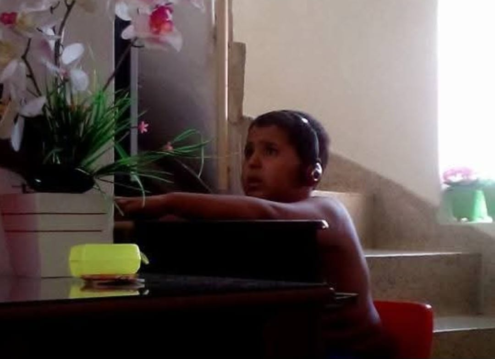
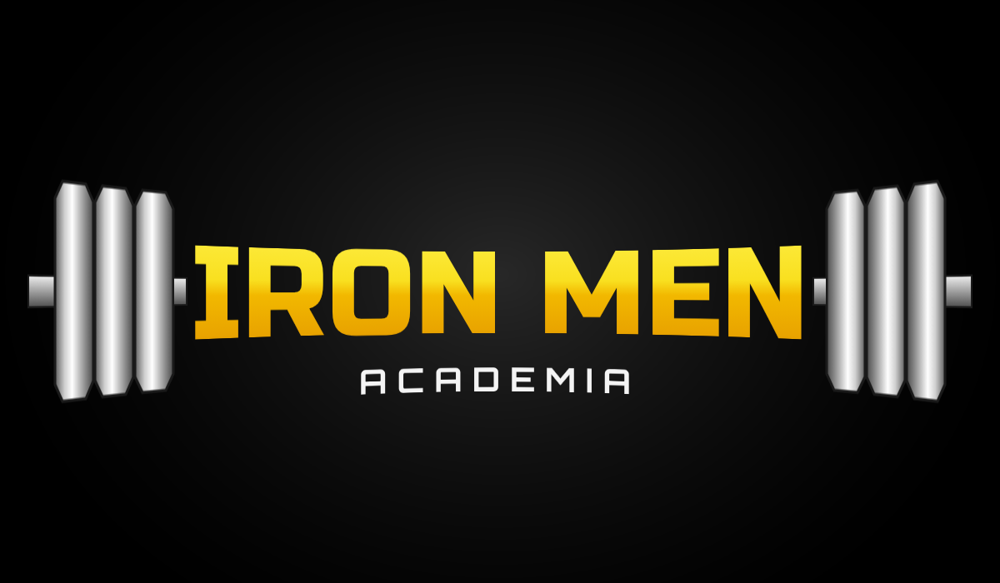
A primeira academia
Aos 15 anos, minha mãe me convidou para ir com ela à Iron Men, uma academia simples de bairro. Mal sabia eu o quanto aquela decisão transformaria a minha vida. Lá, entendi o que realmente significa cuidar de mim, e o treino deixou de ser uma obrigação para se tornar um momento meu, de crescimento e de reconexão comigo mesmo. Quando percebi, já não conseguia faltar nenhum dia.
Quem eu me tornei
Hoje, os hábitos que construí continuam presentes na minha alimentação, no meu sono, nos estudos e, principalmente, na minha autoestima. Mais do que o meu corpo, a musculação transformou a forma como eu me enxergo.
Se o garoto inseguro de 15 anos pudesse me ver hoje, tenho certeza de que sentiria orgulho de quem eu me tornei.
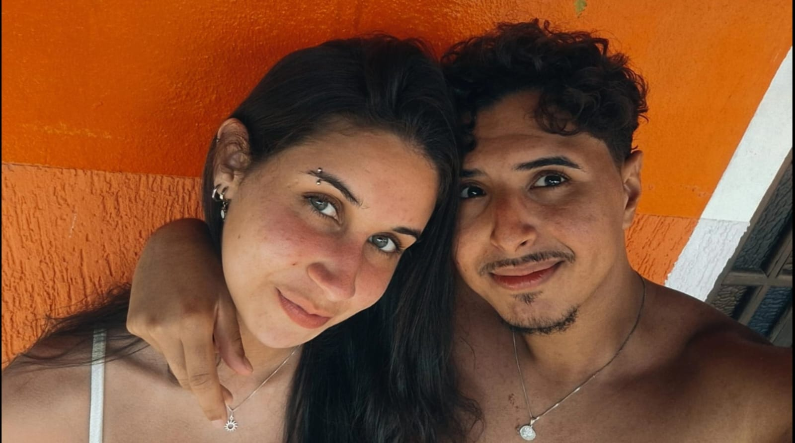
““Um fogo forte transforma em chama e luz tudo o que jogam nele.””
Marco Aurélio · Meditações
Meu kit de treino
Minhas músicas de treino
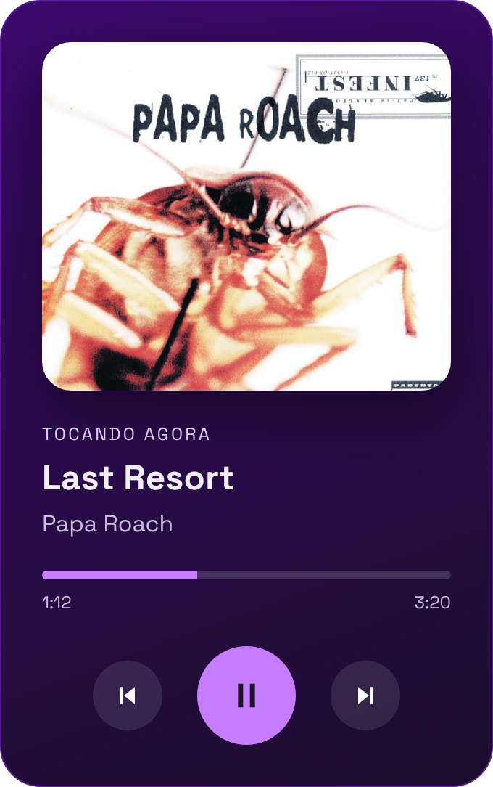
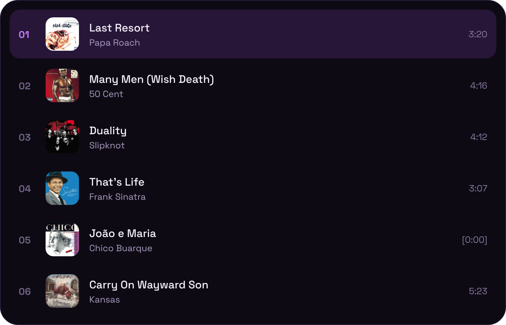
Alimentos e suplementos
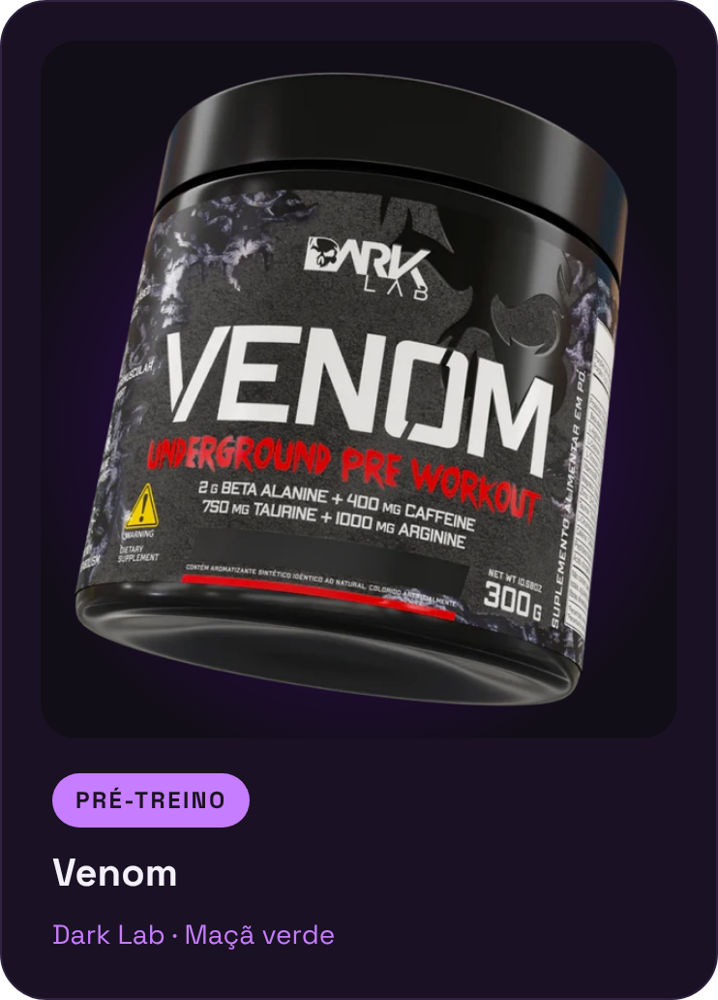
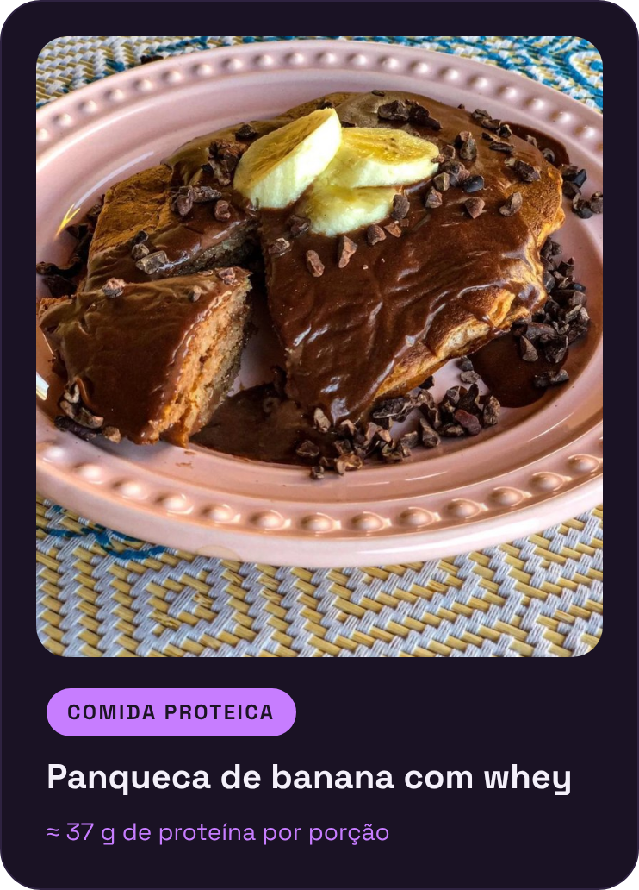
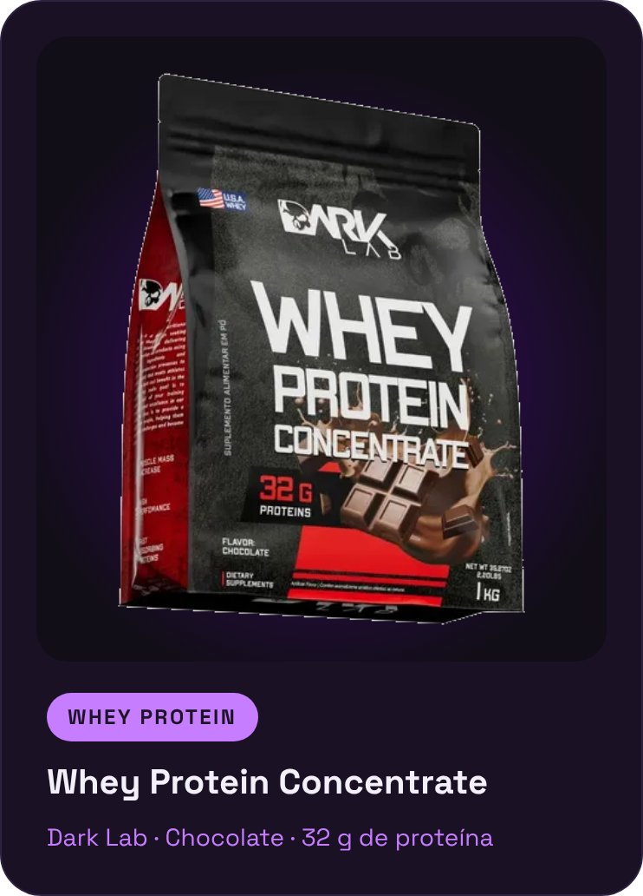
Inspirações
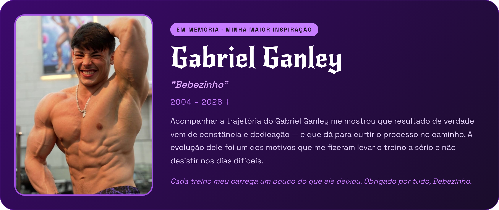
Parceiros de treino
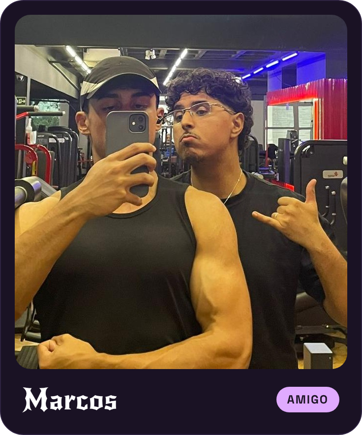
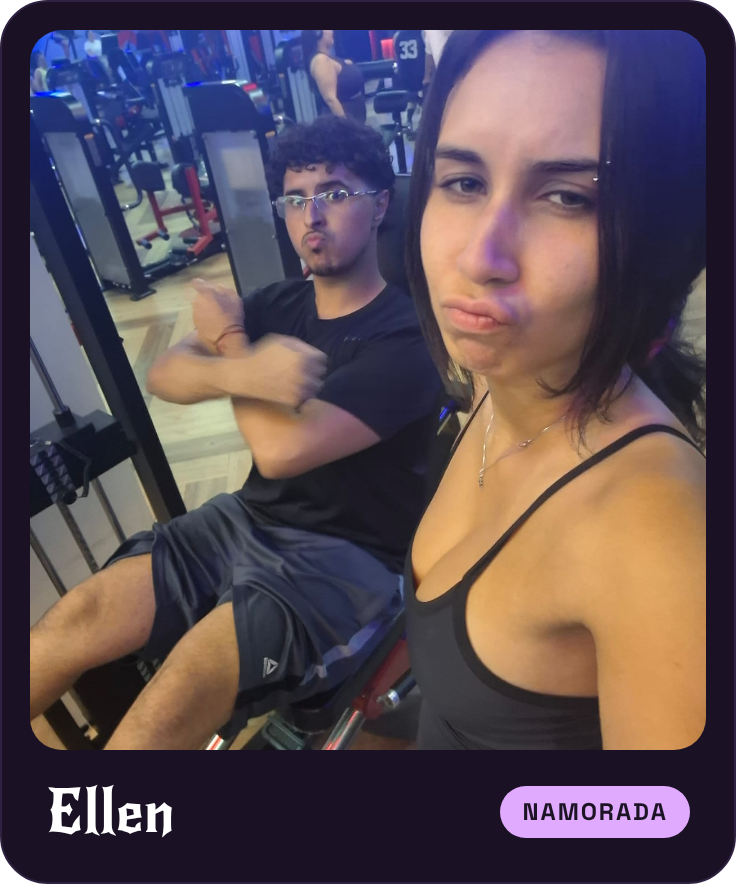
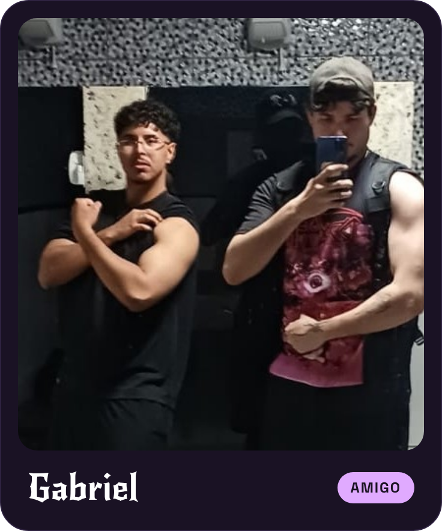
“Minha fórmula para a grandeza é amor fati: não querer que nada seja diferente.”
Friedrich Nietzsche · Ecce Homo